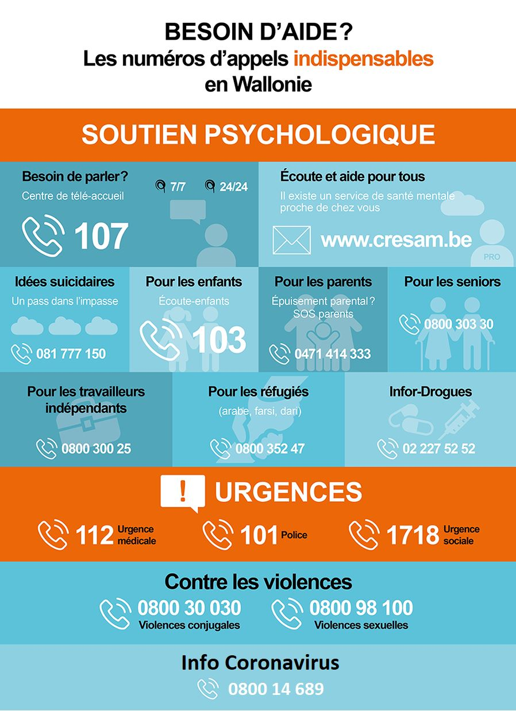

Bonjour à tous,
voici un petit outil pour les codes des clôtures de chaque appels mais aussi les liens et numéros de tél utile à toujours avoir sous la main durant un appel. Pour toutes recommandations ou changement à effectuer vous pouvez me contacter.
Portail
Numéros importants
Plaintes : https://requete-tracing.aviq.be/
Erreur statut vaccinal : https://requete-vaccination.aviq.be/
Suppression des données : dpo@aviq.be
Numéro call center coronavirus (8-20h) : 0800 14 689
Question d'un médecin sur un patient: 071 337033
Question vaccination wallonie: 0800 45 019
Affaires étrangères: Le call center des Affaires étrangères est joignable au +32 (0)2 501 4000 les jours ouvrables de 9 à 17h (heure belge). Le call center est fermé pendant le weekend et les jours de fête et de pont.
Passeport vaccinal :
Wallonie : 071/31.34.93 ( 8h/19h en semaine + samedi)
Communauté Germanophone : 0800/23.032 (9h/17h en semaine)
Bruxelles : 02/214.19.19 9h/19h30 en semaine, 10h/19h30 weekend end et jours féries)
Flandre : 078/78.78.50

Appels OUT 1B
Voicemail : "Bonjour, c’est le centre de suivi des cas covid 19, on cherche à joindre le directeur de..... Vous pouvez nous recontacter sur ce même numéro, le 02.214.19.19, du lundi au vendredi de 9h à 20h et le week-end de 10h à 17h30. En cliquant sur l’option 2 collectivités et en disant que vous sonner pour l’école/entreprise X. Merci de prendre notre appel ou de nous recontacter car votre collaboration est très précieuse. Je vous souhaite une bonne journée "
Voicemail OUT Général : "Bonjour, vous allez être contacté ce jour par le 02.214.19.19 afin de participer à la lutte contre le Covid-19. Vous pouvez également nous recontacter sur ce même numéro, le 02.214.19.19, du lundi au vendredi de 9h à 20h et le week-end de 10h à 17h30. Merci de prendre notre appel ou de nous recontacter car votre collaboration est très précieuse. Je vous souhaite une bonne journée "
bad number:
I-BN-
no answer:
I-NA-
busy:
I-Busy-
close with data:
I-CWD-
close with data:
I-CWD- envoyez via Ehbox
close with data:
I-CWD- envoyez via Plasma
close with data:
I-CWD- modification et encodage dans la 1A
close without data:
I-CWOD-
resheduled:
I-RP-
voicemail:
I-VM-
voicemail message laissé :
I-VML-
voicemail full :
I-BV Full-
voicemail impossible :
I-imp msg-
transfert/ consulted:
I-trans à -
dépistage close with data:
dépistage collectif I-CWD-
résidentiels close with data:
patient résidentiel I-CWD-
ambulatoire close with data:
patient ambulatoire I-CWD-
visiteurs close with data:
visiteurs I-CWD-
Appels IN 1B
close with data:
I–IN-ColCWD-
close without data:
I–IN-ColWOD-
transfert/ consulted:
I–IN-trans à-
question about testing and tracing:
I–QTT à-
question about corona measure:
I–QCM à-